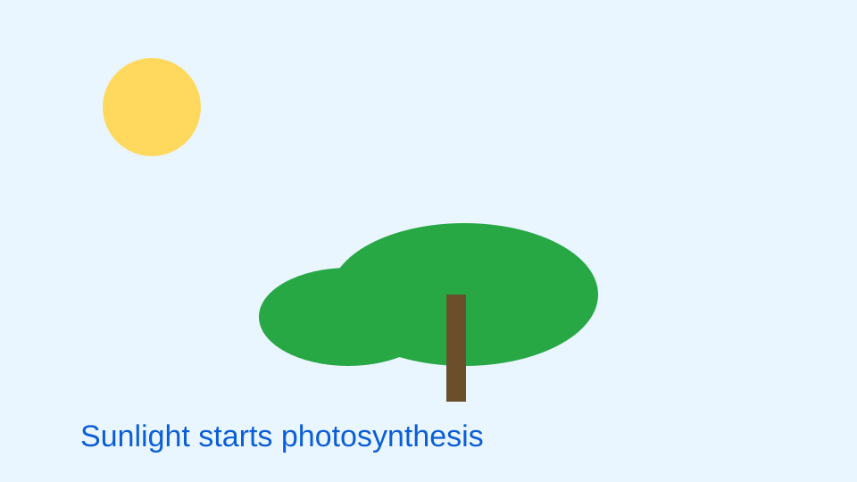
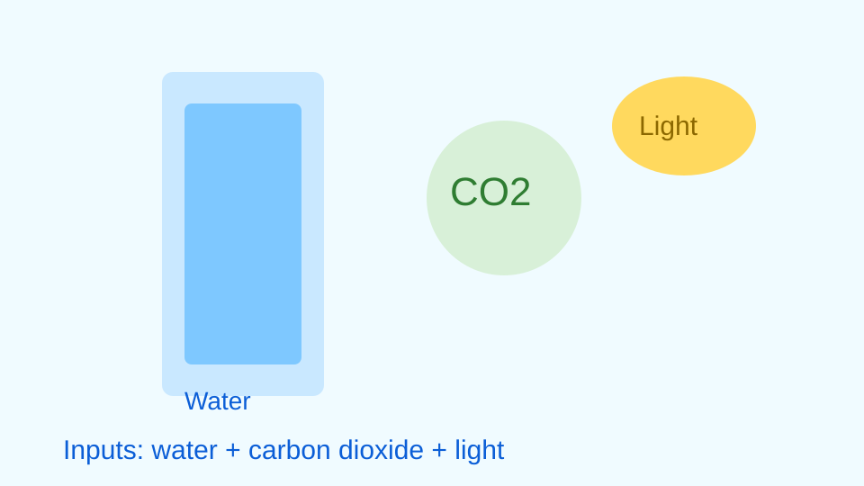
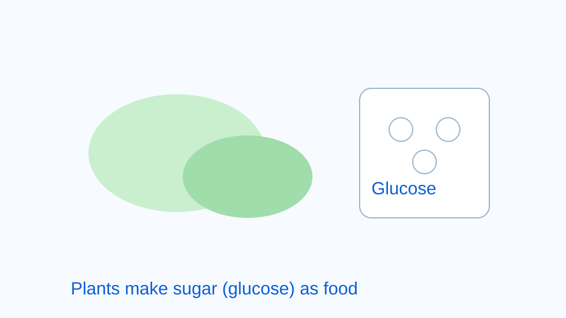
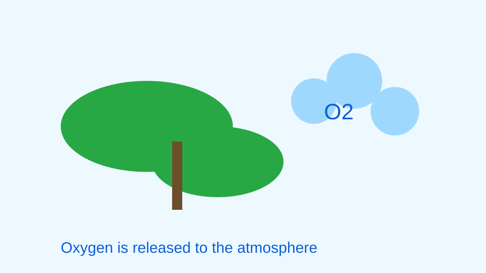

This track presents the same textbook content in guided steps with visuals as learning aids.
Photosynthesis is the process by which green plants make their own food, mainly in the leaves. A molecule called chlorophyll captures light energy from the sun. That light energy powers a reaction that combines carbon dioxide from the air with water absorbed from the soil.

The product of this reaction is glucose, a sugar that stores chemical energy for the plant. Plants use glucose to grow and maintain cells, and they can also store excess glucose for later use. This is why photosynthesis is often described as turning light energy into chemical energy.

Oxygen is released as a by-product when water molecules are split during the process. A common summary equation is 6 CO2 + 6 H2O + light -> C6H12O6 + 6 O2. This equation shows that carbon dioxide and water are transformed into glucose and oxygen using light.

Photosynthesis is essential for life on Earth because it supports food webs and helps maintain atmospheric oxygen. Many organisms depend directly or indirectly on plant-produced food, and many also depend on oxygen released by plants. For this reason, plants are often called vital regulators of ecosystem stability.

OpenStax Biology 2e: https://openstax.org/books/biology-2e/pages/8-1-overview-of-photosynthesis
Khan Academy: https://www.khanacademy.org/science/biology/photosynthesis-in-plants